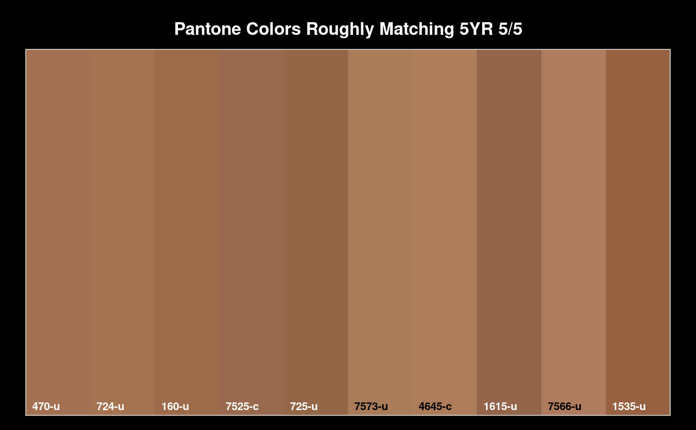

A simple lookup table to convert Pantone spot colors into Munsell notation. Association is based on the "closest" Munsell color via CIE2000 distance metric (dE00). This is an experimental association between the two color systems and should not be used for precision color matching or mixing applications.
Possible uses include rough estimation of soil colors in the field, by means of color swatches based on the Pantone system. This type of color matching is most appropriate in an educational setting where official soil color books may be too expensive.
data(pms.munsell.lut)Pantone spot color code
hex representation of sRGB colorspace, suitable for on-screen use
Munsell notation of closest color "chip"
delta-E 2000 metric describing the (perceptual) distance to the closest Munsell chip
Conversion from PMS to Munsell is performed by PMS2Munsell or manual subset of the lookup table (see examples 1 and 2 below) or implicit subset by way of a join (example 3). Conversion from Munsell to PMS will not always result in a matching color, see example 3 below.
The lookup table contains entries for both coated and un-coated colors, these are identified by a '-c' or '-u' suffix. For example, PMS code '100-c' is associated with '10Y 9/9'.
Several Munsell chips are matched by multiple Pantone spot colors, e.g. 5YR 5/5.
1 2 3 4 5 6 8 9 0.65 0.24 0.08 0.02 0.01 0.00 0.00 0.00
Data were sourced from:
# load LUT
data(pms.munsell.lut)
## 1. Munsell -> Pantone
# colors to match
colors <- c('10YR 3/3', '7.5YR 4/6')
# index / subset match
idx <- pms.munsell.lut$munsell %in% colors
m <- pms.munsell.lut[idx, ]
# simple display
colorContrastPlot(m1 = m$munsell[1], m2 = m$munsell[2], labels = m$code)
## 2. Pantone -> Munsell
codes <- c('723-c', '451-c')
# index / subset match
m <- PMS2Munsell(codes)
# simple display
colorContrastPlot(m1 = m$munsell[1], m2 = m$munsell[2], labels = m$code)
## 3. multiple Pantone colors matching a single Munsell color
#
colors <- pms.munsell.lut[pms.munsell.lut$munsell == '5YR 5/5', ]
colors <- colors[order(colors$dE00), ]
par(mar = c(0, 0, 2, 0), fg = 'white', bg = 'black')
soilPalette(colors$hex, lab = colors$code)
title('Pantone Colors Roughly Matching 5YR 5/5', col.main = 'white', line = 0)

## 4. integration with SPC
data(pms.munsell.lut)
data(sp6)
depths(sp6) <- id ~ top + bottom
# get the closest Munsell chip from color meter data
sp6$munsell <- getClosestMunsellChip(sp6$color, convertColors = FALSE)
# prepare a subset of the PMS lookup table where we take the first match to a Munsell chip
# this ensures the relationship between munsell chip and Pantone color is 1:1
pms.munsell.first <- do.call('rbind', lapply(split(pms.munsell.lut,
pms.munsell.lut$munsell),
function(x) x[1, ]))
# LEFT JOIN PMS table to existing horizons in SPC (on 'munsell' column)
horizons(sp6) <- pms.munsell.first
# graphical check
par(mar = c(0, 0, 2, 1))
plotSPC(sp6, color = 'hex')